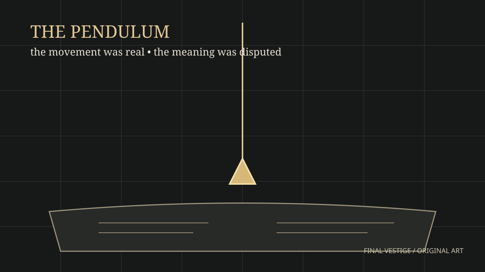

Final Vestige Studios / Mind & Perception / Independent buyer guide
Unpublished review draft, November 14, 2026. This guide is not a medical recommendation. Product details are the seller's descriptions. No first-hand product testing is represented.
Can twelve minutes of audio make meditation easier to start?
If a listening routine appeals to you, what exactly would you be buying—and what evidence should you require before paying for a promise about the mind?
Consider a nineteenth-century experiment. A ring at the end of a thread appeared to respond even though the person holding it felt still. Chevreul studied that movement as a problem of measurement. In 2012 a study found one intriguing advantage for ideomotor answers under uncertainty; a 2022 pendulum study did not reproduce the advantage. The lesson for audio buyers is not that suggestion never works. It is that a convincing experience is not the same as a tested product claim.
Read the primary-source investigation, The Pendulum That Answered Before Anyone Moved It. It contains the original Chevreul document and independent journal references.
Optional 42-second film concept — transcript and caption preview (no video playback)

Proposed 42-second narration: A ring hangs from a thread. Its holder feels still, yet the metal begins to move. Is the answer coming from somewhere outside the hand? In eighteen thirty-three, Chevreul made the pendulum a question for experiment, not a shortcut to certainty. Modern researchers have tested whether such movements reveal hidden knowledge. One study reported an advantage. A later pendulum study did not reproduce it. Experience can be real while its explanation is mistaken. Before buying an audio program, ask the same question: which specific benefits have actually been tested?
Download/read the six WebVTT caption cues. This is a caption concept, not a video file.
Who might find the format useful?
Someone who prefers a packaged, structured audio-listening sequence rather than assembling their own routine may find the format easier to follow. That is a fit hypothesis, not an observed customer outcome. If you want to learn to meditate for free, have limited funds, dislike headphones, or prefer a teacher over pre-recorded audio, do not buy simply because a sales page makes the shortcut sound compelling.
What does the seller say Zen12 Premium contains?
The official Zen12 information page and public standard order page describe an audio package comprising twelve levels and 48 MP3 files, with a quick-start guide, manual, audio guides, a stated one-hour support call, other bonuses and a seller-advertised money-back guarantee. Format and inclusions are product-description claims; access and delivery have not been tested by Final Vestige.
On the public order screen inspected November 14, 2026, a seller-displayed total of $87.99 followed a displayed $100 discount from $187.99. A separate seller promotional route /secret/ displayed a coupon offer of $37. These are different public presentations, not an authenticated Final Vestige referral price. Pricing, applicable tax, sale eligibility and final order terms must be rechecked directly before purchase; a countdown is not proof of a genuine deadline. We do not promote the coupon or urgency.
Try the useful free alternative first
Take a sheet of paper and pick one small, safe task. Name the first physical action (open the notebook, lay out the tools, write the first sentence). Set a timer for twelve minutes and work only on that starting action. Then record what you did, not how you think you ought to feel. No recording, subscription or purchase is required.
This is an original practical exercise, not a reproduction of the meditation studies or a claim of mental-health efficacy. If you want a longer guided resource, Final Vestige's established free 52-page Seven Day Focus Fieldbook has seven days of prompts, a 30-day log and its existing single Jetpack/Dispatch consent funnel. You can read this guide and the research without joining any list.
Five questions worth asking before paying
- Are you buying content or a specific outcome? Twelve levels and 48 files describe quantity; they do not prove improvements in memory, anxiety, sleep or concentration.
- What independent test matches this product? Studies of ideomotor action, hypnosis, meditation or binaural beats do not by themselves validate Zen12's particular recordings. No product-specific controlled outcome data were authenticated in this audit.
- Can you use the actual file format? Confirm device, download permissions, support and accessibility with the seller; Final Vestige did not test fulfillment.
- What does a refund require? The seller advertises a one-year money-back promise on its public order page. Actual entitlement, claim procedure, exclusions and refund completion were not independently tested; read current terms before submitting payment.
- Would free practice meet your goal? If what you want is an easier start, the no-cost exercise above and existing free Fieldbook may be enough. There is no ethical need to buy an audio package to use them.
Is Zen12 scientifically proved to work?
Not established by the sources reviewed here. Meditation as a broad research topic, expectancy-related movement, the scientific study of suggestion and product-specific marketing are separate subjects. We have not independently substantiated the seller's cognitive, clinical, neurological or guaranteed happiness claims. In particular, Chevreul (1833), Gauchou et al. (2012) and Moga & Dienes (2022) did not test Zen12. See the FTC's health-claim guidance for why benefit claims require appropriate evidence.
Zen12 Premium — independent offer review
Offer status: not activated. We cannot independently authenticate publisher approval, allowed website/social/email channels, issued affiliate tracking terms, licensed promotional assets or the Final Vestige referred checkout. We will not use an ordinary direct merchant link as if it were an earning link.
Affiliate disclosure: If an approved earning link is added after authorization, Final Vestige may earn a commission if you purchase through that link, at no additional cost to you. No affiliate purchase link is currently active on this page.
Disabled by default: a click is not a sale, and no affiliate permission, commission or payment is inferred. You may research the seller separately without using an earning link here.
Independent evidence and editorial policy
Chevreul (1833) · Gauchou et al. (2012) · Moga & Dienes (2022) · FTC disclosure FAQ · Final Vestige affiliate disclosure · Editorial standards.
Pre-publication: human review of current offer, claims, links, WCAG/mobile and actual browser rendering required. No analytics, external scripts, autoplay, cookies, email forms, redirect tracking or deployment. Commerce is kept separate from the investigation's conclusions.